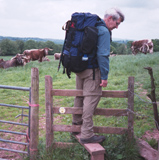
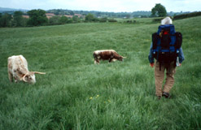
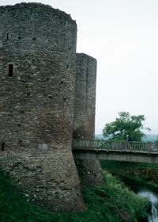

After another late start (we talked a lot with Iris while she cooked breakfast and while we ate), we left Monmouth on “Watery Lane”. Then came mostly fields, with occasional woods. At one stile we faced a field with longhorn cattle. We took a deep breath, crossed the stile, and went past them. They didn’t pay any attention to us at all, and I breathed a sigh of relief. We got to the other side of the (big) field, and hunted and hunted for a way out of it. We couldn’t remember having seen a path sign on the stile. We groaned, and walked back through the cattle to the stile – and found that it did have the path sign on it, after all! So back we went for the third time, past the cattle, who undoubtedly were wondering what the heck was going on. This time we found a stile, hidden behind some trees at the far corner of the field.
We continued through more fields, some with cows, some newly planted (the "path" was the narrow strip between rows of plants), one an enormous apple orchard with thousands of new young trees in straight rows. We passed the church with the wonderful name "Llanfihangel Ystern Llywern", meaning "St.Michael's of the Fiery Meteor", and later stopped in to see the church of St.Teilo at Llantilio Crossenny. Outside the village inn, the Hostry, we chatted with two men from the Netherlands, whom we would be seeing off and on for the next several days. Fred and Theo were camping, doing the first half of the Offa's Dyke Path.
Not too much later we came to the White Castle. Apparently it had once had a white plaster coating; hence the name. It's a 12th century century castle built by the Norman Marcher Lords. We wandered around in it for awhile before heading off for our B&B farmhouse not far away. It's an old farm, built in 1420. Its name is "Tre-Rhew", which means "Home of Frost". The name is old, too, but Trevor said that it's still applicable -- it stays cold and frosty there long after other places have warmed up. We were there by early afternoon, and Anne fixed us tea and cookies. We relaxed, watched TV and read. It had been drizzling all afternoon but now was pouring rain, so we were glad to accept when Trevor stuck his head in the lounge and offered to drive us to the pub for dinner. When he dropped us off, he said "Tell Paul to ring me when you're finished"; we took him up on that, too. We enjoyed our dinner (mushroom and nut fettucini for me, Tikki Marsala for Thann), and the pub (the King's Arms) in general.. It was all very pleasant!
| Previous Day | Next Day | Home Page |